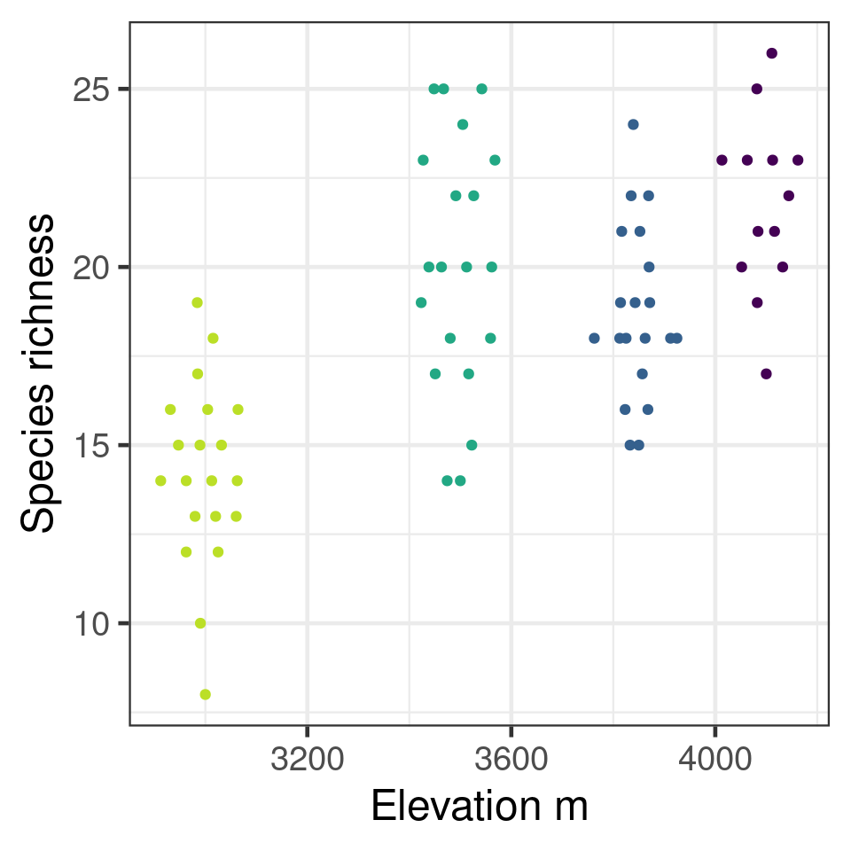

Bio300B Lecture 8
Institutt for biovitenskap, UiB
12 October 2025
Choose \(\beta\) that minimise the sum of squares of residuals
\[\sum_{i = 1}^{n}\varepsilon_i^2 = \sum_{i = 1}^{n}(y_i - (\beta_0 + \beta_1x_i))^2\]
Assumes residuals have normal distribution
How likely are the data given the model?
\[\mathcal{L}(\mu,\sigma|y) = \frac{1}{\sigma \sqrt {2\pi } }e^{-\frac{(x - \mu)^2} {{2\sigma ^2 }}}\]
Find likelihood for each observation & combine them
Product of likelihoods fails
\[\prod_{i =1}^n\mathcal{L}(\mu,\sigma|y) \approx0\]
Use log-likelihood
\[\mathcal{l}(\mu,\sigma|y) = log(\mathcal{L}(\mu,\sigma|y))\]
Find the sum of the log-likelihoods
\[\sum_{i = 1}^n{(\mathcal{l}(\mu,\sigma|y))} = {log}(\prod_{i = 1}^n{\mathcal{L}(\mu,\sigma|y)})\]
Choose coefficients that give maximum log-likelihood
# A tibble: 3 × 5
term estimate std.error statistic p.value
<chr> <dbl> <dbl> <dbl> <dbl>
1 (Intercept) 39.0 0.403 96.8 1.08e-135
2 islandDream -0.473 0.538 -0.879 3.81e- 1
3 islandTorgersen -0.0240 0.550 -0.0437 9.65e- 1# A tibble: 3 × 5
term estimate std.error statistic p.value
<chr> <dbl> <dbl> <dbl> <dbl>
1 (Intercept) 39.0 0.403 96.8 1.08e-135
2 islandDream -0.473 0.538 -0.879 3.81e- 1
3 islandTorgersen -0.0240 0.550 -0.0437 9.65e- 1Analysis of Variance Table
Response: bill_length_mm
Df Sum Sq Mean Sq F value Pr(>F)
island 2 7.48 3.7395 0.5238 0.5934
Residuals 148 1056.58 7.1391 Analysis of Deviance Table
Model: gaussian, link: identity
Response: bill_length_mm
Terms added sequentially (first to last)
Df Deviance Resid. Df Resid. Dev F Pr(>F)
NULL 150 1064.1
island 2 7.479 148 1056.6 0.5238 0.5934Analogous to Sum of Squares in a linear model
Smaller residual deviance is better
\[deviance = -2(log(\mathcal{L}_M) - log(\mathcal{L}_S))\]
Link function and Linear predictor
\[\color{red}{{g(E(\mu_i))}} = \color{blue}{ \beta_0 + \beta_1x_i}\] - Link function transforms the expected value
Variance function
\[\color{purple}{var(Y_i) = \phi V(\mu_i)}\]
Species richness on Mt Gonga grasslands
| site | elevation | richness |
|---|---|---|
| H | 4100 | 23 |
| H | 4100 | 19 |
| A | 3850 | 15 |
| A | 3850 | 21 |
| M | 3500 | 25 |
| M | 3500 | 25 |
| L | 3000 | 10 |
| L | 3000 | 14 |

Call:
glm(formula = richness ~ elevation, family = poisson, data = gonga_rich)
Coefficients:
Estimate Std. Error z value Pr(>|z|)
(Intercept) 1.7219760 0.2525865 6.817 9.27e-12 ***
elevation 0.0003311 0.0000694 4.771 1.83e-06 ***
---
Signif. codes: 0 '***' 0.001 '**' 0.01 '*' 0.05 '.' 0.1 ' ' 1
(Dispersion parameter for poisson family taken to be 1)
Null deviance: 62.198 on 72 degrees of freedom
Residual deviance: 39.042 on 71 degrees of freedom
AIC: 388.65
Number of Fisher Scoring iterations: 4Predictions by default on the linear predictor scale
1 2 3 4 5 6 7 8
2.715362 2.748475 2.781588 2.814700 2.847813 2.880926 2.914039 2.947152
9 10 11 12
2.980265 3.013378 3.046490 3.079603 Can predict on response scale with type argument
1 2 3 4 5 6 7 8
15.11008 15.61879 16.14463 16.68818 17.25002 17.83078 18.43109 19.05162
9 10 11 12
19.69303 20.35604 21.04137 21.74977 Or use inverse of Link function - exp() for Poisson
Need to do calculations on link scale
# A tibble: 12 × 3
elevation .fitted .se.fit
<dbl> <dbl> <dbl>
1 3000 2.72 0.0509
2 3100 2.75 0.0452
3 3200 2.78 0.0398
4 3300 2.81 0.0351
5 3400 2.85 0.0312
6 3500 2.88 0.0285
7 3600 2.91 0.0273
8 3700 2.95 0.0279
9 3800 2.98 0.0301
10 3900 3.01 0.0336
11 4000 3.05 0.0380
12 4100 3.08 0.0432# A tibble: 12 × 5
elevation .fitted .se.fit .upper .lower
<dbl> <dbl> <dbl> <dbl> <dbl>
1 3000 15.1 0.0509 16.7 13.7
2 3100 15.6 0.0452 17.1 14.3
3 3200 16.1 0.0398 17.5 14.9
4 3300 16.7 0.0351 17.9 15.6
5 3400 17.3 0.0312 18.3 16.2
6 3500 17.8 0.0285 18.9 16.9
7 3600 18.4 0.0273 19.4 17.5
8 3700 19.1 0.0279 20.1 18.0
9 3800 19.7 0.0301 20.9 18.6
10 3900 20.4 0.0336 21.7 19.1
11 4000 21.0 0.0380 22.7 19.5
12 4100 21.7 0.0432 23.7 20.0Presence/absence of Tabellaria binalis in European lakes along a pH gradient
pH TA003A
1.21 4.491 1
10.21 5.264 0
11 4.900 1
113.21 6.431 0
115.11 5.682 0
12.11 5.244 1
121 4.800 1
15.11 5.407 1
17.21 4.912 0
18.11 5.441 0
181 6.300 0
19.21 6.256 0
2.11 4.966 1
20.11 6.577 0
21 4.500 1
21.11 6.046 0
3.11 4.600 1
3.511 7.000 0
34.11 5.040 0
37.11 6.494 0
4.11 4.381 1
42.11 5.095 1
44.21 6.600 0
49.11 4.792 1
5.11 4.640 1
59.11 5.517 0
6.21 4.616 1
601 4.800 1
61 4.600 1
65.21 6.175 0
66.11 5.990 0
71 5.700 0
8.21 4.930 1
80.11 4.730 1
81.21 4.522 1
82.11 4.619 1
83.11 4.945 0
86.11 4.890 1
87.21 5.141 1
88.21 5.260 0
89.11 5.766 0
9.11 4.676 1
ACH1 5.101 0
ARR1 6.179 0
ARTH1 7.093 0
BARE1 6.748 0
BARL1 6.430 0
BER1 4.330 0
BODG1 6.530 0
BODL1 5.380 0
BREC1 6.596 0
BUGE1 4.840 0
BURNMT1 6.400 0
BYCH1 6.440 0
CFYN1 5.470 0
CHN1 5.144 1
CLON1 6.942 0
CLYD1 6.140 0
CON1 4.820 0
COR1 5.328 1
CWBY1 5.150 1
DEVOKE1 6.100 0
DIWA1 5.720 0
DOI1 5.899 1
DOON1 5.237 0
DUH1 5.134 1
DUL1 5.160 0
ENO1 4.543 1
EUN1 4.952 0
FHI1 5.283 1
FINL1 5.756 0
FLE1 4.538 1
GARN1 6.250 0
GEIR1 6.760 0
GLAS1 6.240 0
GLYN1 4.920 0
GOD1 5.660 0
GREENT1 5.200 0
GULSPET1 4.830 1
GWYN1 6.690 0
GYN1 5.120 0
HARR1 5.019 0
HIR1 4.760 0
HOLET1 4.500 1
HOLMEV1 4.700 1
INVA1 6.586 0
IRD1 5.260 0
KIRR1 5.116 0
LAG1 5.240 0
LAI1 5.400 0
LAR1 4.875 1
LCSL1 5.180 0
LCSU1 5.350 0
LDE1 5.288 0
LDE2 5.700 0
LENY1 6.240 0
LGR1 4.643 1
LGR2 4.800 1
LJOSV1 4.410 1
LLDU1 5.800 0
LLGH1 4.642 1
LOD1 5.547 1
LOWT1 5.000 1
MABE1 5.265 0
MACA1 5.022 1
MANN1 6.445 0
MINN1 5.166 0
MUCK1 5.417 0
NAGA1 5.038 0
OCHI1 5.953 0
PARC1 6.800 0
PENR1 5.040 0
RIEC1 5.266 0
RLGH1 4.718 1
RLGH2 4.800 1
RONA1 6.532 0
S101 6.650 0
S11 6.840 0
S111 5.250 1
S121 6.510 0
S131 5.220 0
S141 6.380 0
S151 7.250 0
S161 6.400 0
S171 5.810 0
S181 5.840 0
S191 5.030 0
S201 5.490 1
S21 7.160 0
S211 4.500 1
S221 4.410 1
S241 5.990 0
S251 6.970 0
S261 6.580 0
S271 5.130 1
S281 4.940 1
S291 5.010 1
S301 5.520 0
S31 6.650 0
S311 5.890 1
S41 5.750 1
S61 5.970 0
S71 6.460 1
S81 6.700 1
S91 6.200 0
SCOATT1 5.000 1
SKAK1 5.846 0
SKE1 5.125 0
SKE2 5.100 0
SKOMAKV1 4.670 1
STRO1 4.837 0
TANN1 4.995 1
TEAN1 5.700 0
TECW1 6.060 0
TINK1 5.966 0
TROO1 5.030 1
UAI1 5.767 0
UIS1 6.209 0
URR1 6.770 0
VAL1 4.688 1
VEREV1 4.490 1
WHIN1 6.899 0
WHIN2 6.900 0
WHIT1 7.031 0
WOOD1 6.782 0
WOOD2 6.900 0
YGAD1 5.740 0
Call:
glm(formula = TA003A ~ pH, family = binomial, data = swap_data)
Coefficients:
Estimate Std. Error z value Pr(>|z|)
(Intercept) 13.8942 2.3506 5.911 3.40e-09 ***
pH -2.7134 0.4531 -5.988 2.13e-09 ***
---
Signif. codes: 0 '***' 0.001 '**' 0.01 '*' 0.05 '.' 0.1 ' ' 1
(Dispersion parameter for binomial family taken to be 1)
Null deviance: 218.10 on 166 degrees of freedom
Residual deviance: 144.24 on 165 degrees of freedom
AIC: 148.24
Number of Fisher Scoring iterations: 6# A tibble: 167 × 13
.rownames TA003A pH .fitted .se.fit .resid .hat .sigma .cooksd
<chr> <dbl> <dbl> <dbl> <dbl> <dbl> <dbl> <dbl> <dbl>
1 1.21 1 4.49 1.71 0.369 0.577 0.0177 0.937 0.00166
2 10.21 0 5.26 -0.389 0.210 -1.02 0.0106 0.934 0.00366
3 11 1 4.90 0.599 0.238 0.936 0.0130 0.935 0.00366
4 113.21 0 6.43 -3.56 0.608 -0.237 0.00999 0.938 0.000146
5 115.11 0 5.68 -1.52 0.310 -0.628 0.0142 0.937 0.00159
6 12.11 1 5.24 -0.335 0.208 1.32 0.0105 0.932 0.00750
7 121 1 4.80 0.870 0.264 0.837 0.0145 0.936 0.00313
8 15.11 1 5.41 -0.777 0.232 1.52 0.0116 0.930 0.0129
9 17.21 0 4.91 0.566 0.235 -1.43 0.0128 0.931 0.0116
10 18.11 0 5.44 -0.869 0.240 -0.837 0.0119 0.936 0.00256
# ℹ 157 more rows
# ℹ 4 more variables: .std.resid <dbl>, fitted <dbl>, lower <dbl>, upper <dbl>Tobacco budworm vs pesticide dose
# A tibble: 12 × 5
ldose n numdead propdead sex
<int> <dbl> <dbl> <dbl> <fct>
1 0 20 1 0.05 M
2 1 20 4 0.2 M
3 2 20 9 0.45 M
4 3 20 13 0.65 M
5 4 20 18 0.9 M
6 5 20 20 1 M
7 0 20 0 0 F
8 1 20 2 0.1 F
9 2 20 6 0.3 F
10 3 20 10 0.5 F
11 4 20 12 0.6 F
12 5 20 16 0.8 F # two column response number successes, number failures
budworm.lg <- glm(cbind(numdead, numalive = 20 - numdead) ~ sex*ldose,
data = budworm,
family = binomial)
# response is proportion successes, weights argument gives total
budworm.lg <- glm(propdead ~ sex*ldose,
data = budworm,
family = binomial,
weights = n)
Call:
glm(formula = propdead ~ sex * ldose, family = binomial, data = budworm,
weights = n)
Coefficients:
Estimate Std. Error z value Pr(>|z|)
(Intercept) -2.9935 0.5527 -5.416 6.09e-08 ***
sexM 0.1750 0.7783 0.225 0.822
ldose 0.9060 0.1671 5.422 5.89e-08 ***
sexM:ldose 0.3529 0.2700 1.307 0.191
---
Signif. codes: 0 '***' 0.001 '**' 0.01 '*' 0.05 '.' 0.1 ' ' 1
(Dispersion parameter for binomial family taken to be 1)
Null deviance: 124.8756 on 11 degrees of freedom
Residual deviance: 4.9937 on 8 degrees of freedom
AIC: 43.104
Number of Fisher Scoring iterations: 4Fixed relationship between mean and variance
Models can have less/more dispersion than expected
Overdispersion increases risk of false positives
Analysis of Deviance Table
Model: poisson, link: log
Response: richness
Terms added sequentially (first to last)
Df Deviance Resid. Df Resid. Dev Pr(>Chi)
NULL 72 62.198
elevation 1 23.156 71 39.042 1.494e-06 ***
---
Signif. codes: 0 '***' 0.001 '**' 0.01 '*' 0.05 '.' 0.1 ' ' 1If residual deviance / residual df \(\approx\) 1 then OK
If not, then model under or over dispersed
Checking with performance package
Adds scale parameter to variance function \(\color{purple}{var(Y) = \phi \mu}\)
Same coefficients, but tests adjusted
Analysis of Deviance Table
Model: quasipoisson, link: log
Response: richness
Terms added sequentially (first to last)
Df Deviance Resid. Df Resid. Dev F Pr(>F)
NULL 72 62.198
elevation 1 23.156 71 39.042 42.02 1.03e-08 ***
---
Signif. codes: 0 '***' 0.001 '**' 0.01 '*' 0.05 '.' 0.1 ' ' 1#| '!! shinylive warning !!': |
#| shinylive does not work in self-contained HTML documents.
#| Please set `embed-resources: false` in your metadata.
#| label: count-app2
#| standalone: true
#| viewerHeight: 650
library(shiny)
library(bslib)
ui <- page_sidebar(title = h1("Distributions for count data"),
sidebar = sidebar(accordion(accordion_panel(title = "Distribution",
p("Two distributions are commonly used for count data."),
radioButtons("dist", "Distribution", choices = c("Poisson",
"Negative Binomial")), sliderInput("mean", "Mean",
min = 0, max = 10, round = FALSE, value = 1.5,
step = 0.5), uiOutput("negbin"), ), accordion_panel(title = "Zero Inflation",
p("A dataset with more zeros than expected from a Poisson/negative binomial distribution is zero inflated."),
sliderInput("zero", "Proportion excess zeros", min = 0,
max = 1, value = 0), p("In the plot, excess zeros are shown in red.")))),
layout_columns(col_widths = c(12), card(plotOutput("distPlot"))))
server <- function(input, output) {
output$negbin <- renderUI({
if (input$dist == "Negative Binomial") {
freezeReactiveValue(input, "variance")
list(sliderInput("variance", "Variance", min = input$mean,
max = 20, value = 10), p("With the negative binomial distribution, the variance can change independently of the mean, giving the distribution more flexibility."))
}
else {
p("With the Poisson distribution, the mean is equal to the variance.")
}
})
output$distPlot <- renderPlot({
axis_max <- 25
x <- 0:axis_max
if (input$dist == "Poisson") {
y <- dpois(x, lambda = input$mean)
}
else {
mu <- input$mean
v <- input$variance + 1e-04
size <- mu^2/(v - mu)
prob <- mu/v
y <- dnbinom(x, prob = prob, size = size)
}
y <- y * (1 - input$zero)
par(cex = 1.5, mar = c(3, 3, 1, 1), tcl = -0.1,
mgp = c(2, 0.2, 0))
plot(x, y, type = "n", ylim = c(0, max(max(y), y[x ==
0] + (input$zero))), xlab = "Count", ylab = "Density")
segments(x, 0, x, y, lwd = 10, lend = 1)
segments(0, y[x == 0], 0, y[x == 0] + (input$zero),
col = "#832424", lwd = 10, lend = 1)
})
}
shinyApp(ui = ui, server = server)